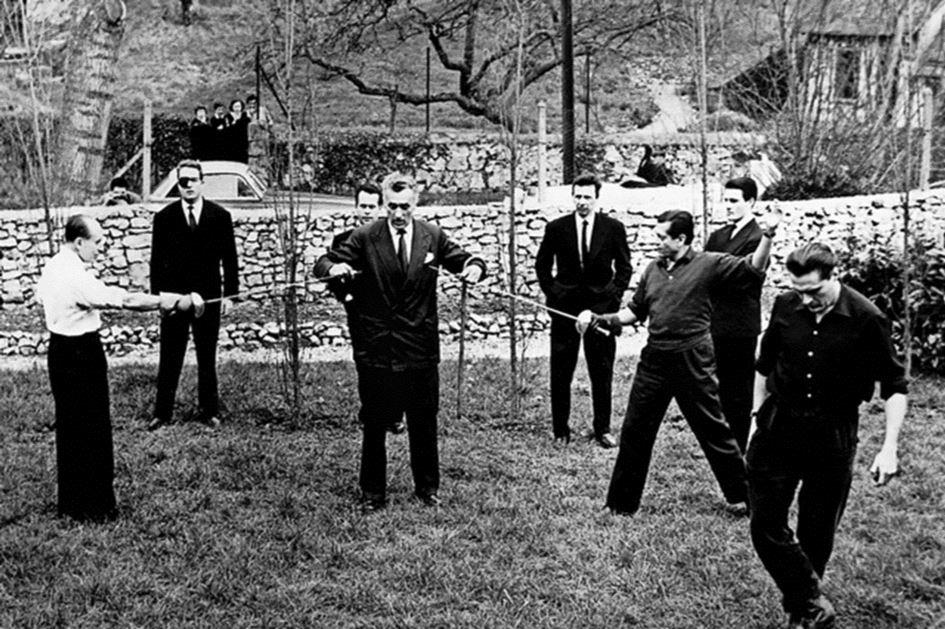

Les Mémoires de Jean-Marie Le Pen portent en sous-titre « Fils de la nation ». L’ouvrage, plus de 400 pages, est édité par les éditions Muller. Le premier tirage de 50 000 exemplaires a été épuisé avant le jour de la mise en vente ; deux jours avant la parution en librairie l’éditeur le fit retirer à 50 000 exemplaires... Depuis les ventes ont explosé.
Ces mémoires étaient effectivement très attendues, mais ce livre ne constitue que le premier volume et s’arrête à 1968. On n’apprend donc rien de fondamental en ce qui concerne le Front National qui devrait être l’objet de parutions suivantes. Par contre les anecdotes, souvenirs et relations de ce qui a été la vie de son fondateur fourmillent tout au long de l’ouvrage. Il est évident que raconter toute une vie politique, sentimentale, familiale, militaire et sociale est un véritable travail de titan ou de bénédictin de la mémoire. Comme Jean-Marie Le Pen est passé chez les jésuites il réussit assez bien l’exercice.
Il faut dire que le terrain était libre : peu d’ouvrages ont été consacrés au refondateur de ce que l’on appelle l’extrême droite française et qui est en fait la droite nationaliste.
Les livres parus sur Jean-Marie Le Pen sont en général des livres de dénigrement, quant aux articles, hormis ceux des journaux de la même coloration que le tribun, ils sont souvent ceux de la presse à la botte ; de gauche ou de droite, la presse en France est contrôlée ou appartient à des milliardaires ou a des conglomérats financiers, dont les intérêts ne sont pas toujours convergents avec ceux de la nation. Selon le classement de Reporter Sans Frontières pour l’année 2018, la France se classe en trente-troisième position en ce qui concerne la liberté de la presse. Ce qui en dit long sur son indépendance et son objectivité.
Comme il est écrit en quatrième de couverture : « Un regard nouveau sur Le Pen : le sien. ».
Nous voici donc pour quelques heures en intimité avec l’homme le plus décrié par la presse française. Je ne reviendrai pas, ni ne signalerai dans cette recension littéraire les arguments que Jean-Marie Le Pen développe sur les campagnes de presse calomnieuses dont il fut l’objet. Je n’en ai pas les moyens et je deviendrais de fait une proie facile pour les associations à l’affût de quelques euros à grappiller en ruinant ceux qui osent encore s’exprimer librement... dans les journaux étrangers !
Peu de choses sur la vie familiale ou sentimentale du leader politique, sinon le minimum vital afin de suivre le parcours accompli et c’est tant mieux ; c’est aussi à cela que l’on reconnaît et apprécie les écrits des hommes politiques véritables : la pudeur. Ce qui n’empêche pas de pénétrer une certaine intimité familiale et psychologique :
« Les vacances étaient notre récompense, je les passais parfois à Kerdaniel dans la ferme de mes grands-parents Hervé, où j’assistai une fois avec horreur à l’assassinat d’un cochon maintenu par les hommes et qui poussait des cris déchirants avant d’être égorgé. Le souvenir m’en choque encore. » p 55
Certes, il n’y a là rien d’exceptionnel et cette scène du cochon saigné était fréquente en France dans les années où Jean-Marie le Pen vécut son enfance –certainement aussi dans une grande partie de l’Europe-.
Que cette scène n’ait rien d’exceptionnel et qu’elle ait certainement été vécue par des milliers d’enfants n’empêche pas les choses d’être et ne réduit en rien le « trauma » qu’elle occasionne. Comme il l’écrit souvent tout au long de l’ouvrage, les mœurs étaient alors beaucoup plus rudes qu’aujourd’hui.
Jean-Marie le Pen nous montre que les Mémoires d’hommes politiques sont aussi des livres d’histoire :
« Mon bourg doit décidément beaucoup à Napoléon III : c’est lui qui a institué l’élevage organisé de l’huitre en France et lancé les premiers parcs à huitres. La Trinité fut dès lors un grand centre ostréicole... » p 17
Le témoignage historique reste souvent valable à condition toutefois de ne pas avoir été écrit trop tard ; quand le personnage n’a plus ni le temps ni l’énergie pour se former ou se tenir au courant des dernières estimations historiques :
« Sans doute la campagne de France n’avait-elle pas été la promenade de santé qu’une mémoire défaillante décrit aujourd’hui, ils avaient eu vingt mille tués. » p 90
Le Pen ne précise pas ce qu’il appelle campagne de France, mais selon les dernières études historiques fiables le nombre de morts à la suite des combats de mai - juin 1940 (La Bataille de France) est compris entre 50 000 et 90 000 hommes. Certains montent le chiffre à 100 000 ou 123 000 quand on y ajoute les morts en captivité.
On peut suivre ou non le chef dans ses analyses : « Fidèle à mon nom –en breton, Le Pen veut dire chef... » (p 34), on peut également partager une partie de ces dernières sans le suivre jusqu’à la conclusion. S’exprimant sur l’abandon de la messe en latin par l’Église catholique :
« La niaiserie des formes qui les ont remplacés me navrent. L’abandon du latin, au moment même où l’on avait le plus besoin d’unité, face à l’impérialisme culturel de l’anglais, me semble si absurde qu’il n’a pu résulter que d’une volonté consciente de rompre avec la tradition pour troubler les fidèles, les couper de leur foi de toujours et de leurs devanciers. » p 48
Si on ne peut qu’être d’accord avec le terme de niaiserie et voir dans la réforme liturgique une démolition volontaire du sacré, le pas à franchir reste grand pour adhérer, ici, à un complot impérialiste anglo-américain pour la primauté de la langue. Mais rien ne permet objectivement de s’inscrire en faux contre les arguments avancés par Jean-Marie Le Pen. Après tout, il y a tant de choses qui paraissent absurdes au départ et s’avèrent calculées avec précision...
L’ex-président du FN, et on le lui pardonnera avec indulgence, oublie souvent un argument majeur dans le déroulement du politique et des affaires publiques : la bêtise humaine. Peut-être particulièrement celle des français. Il est vrai que lorsque on a mis sa peau au bout de ses idées et que ses idées concernaient la Patrie il est assez difficile de s’avouer et de reconnaître que cette patrie est composée d’abrutis masochistes qui prennent un malin plaisir à se faire rouler dans la farine, à se laisser déposséder de tout ce qui les fait, les anime et les fait vivre.
Souvenirs de la guerre aussi qu’il vécut jeune, un semblant d’épisode du maquis et de la résistance qui ne furent en rien des faits d’armes –qui viendront plus tard- mais des velléités de jeune homme, comme en eurent beaucoup de jeunes gens à cette époque. Souvenirs instructifs tout de même :
« Les 23 et 24 janvier 1943, Lorient fut entièrement réduit en cendres par un bombardement incendiaire au phosphore » p 96
Quelque part, ailleurs dans le livre, Jean-Marie le Pen note que les américains, qui ont passé la moitié du globe aux bombardements divers et variés (bombes à l’uranium appauvri en Serbie, bombes au graphite, bombes au phosphore (surtout sur Berlin en 44) bombes incendiaires, napalm, produits défoliants en Asie etc. la liste est non exhaustive, sont toujours les premiers à faire la morale aux autres peuples. Cela n’a pas beaucoup changé...
À la page 127, l’auteur nous livre une très bonne analyse de la situation politique sur de Gaulle durant la deuxième guerre mondiale :
« À l’extérieur il n’était pas très sûr non plus de sa place, il demeurait vaille que vaille le poulain de Churchill, mais les américains n’en étaient pas fous, ils lui avaient préféré Darlan, puis Giraud. Il lui fallait donc le soutien de Staline, vrai patron du PCF. C’est pourquoi il lui rendit visite à Moscou et accueillit des ministres communistes dans son gouvernement provisoire d’Alger. »
Mais, vu le rôle qu’ont joué les communistes dans la résistance (surtout après la rupture du pacte germano-soviétique) de Gaulle pouvait-il faire autrement que de prendre des communistes avec lui ?
Après l’épisode de la guerre on passe à la découverte d’un autre Jean-Marie Le Pen. Son père lui avait fait visiter Paris durant son enfance et là, le jeune homme découvre Paris et la vie parisienne à l’occasion de ses études de droit et de la politique. On est assez surpris des fréquentations du jeune homme. Mais avant que la presse ne le dépeigne en politicien sulfureux, il côtoya pas mal de gens célèbres. Quelques-uns il est vrai, ont préféré, une fois qu’il commença à devenir connu pour son nationalisme, se protéger du scandale de le connaître et assurer leur avenir. Le Pen ne semble pas trop leur en tenir rigueur.
« J’en profitais pour découvrir Paris. [...] J’affectionnais surtout Claude Luther qui donnait une nouvelle vie au New Orléans. Nous sommes restés très copains jusqu’à sa mort il y a dix ans, il est venu souvent à Montretout. [...] Moustache tenait la batterie, Mowgli Jospin, - le demi-frère de Lionel - qui s’appelait Maurice était au trombone. On croisait Boris Vian. J’ai bu des canons avec lui. » p 143
De la page 146 à la page 148 Jean-Marie le Pen nous raconte quelques unes de ses aventures parisiennes, sa qualité de témoin du Marquis de Cuevas, au duel à l’épée. Le duel est resté célèbre ; le marquis ayant blessé son adversaire, Le Pen le consola dans ses bras :
« Le marquis était un être exquis et cultivé, il n’aimait pas les femmes mais cela ne me gênait pas, il ne m’a jamais fait de propositions. » p 147
Quelques pages plus loin, le fondateur du Front National nous parle de ses expériences de travailleur, roulant au tri postal, à trier des sacs de courrier dans le wagon postal lorsque le convoi roule, le vrai terme du métier est ambulant (il a tenu une semaine.) Tour à tour pêcheur embarqué, mineur de fond, et là, il en fait un peu trop. Déjà bien installé dans la vie parisienne et la vie politique, il veut, et pas uniquement dans ses Mémoires, mais également dans ses discours et ses propos publics nous faire croire qu’il a connu dans sa vie la dure condition de mineur et de travailleur de force. Nous ne le contesterons pas, mais faire le mineur occasionnellement, descendre au fond de la mine à l’occasion ou faire n’importe quel travail dangereux et pénible n’est pas du tout la même chose que lorsque ce travail est l’horizon unique du travailleur, sa condition, sa destinée. Le travail occasionnel de vacances, même très pénible, reste une expérience, pas un devenir existentiel. La vision des choses de l’existence ne peut être la même...
À la page 176 de ses Mémoires, dissertant sur le devenir du continent asiatique et des conséquences des mouvements politiques de ce dernier sur l’Occident Jean-Marie le Pen écrit :
« En Corée où la paix allait être signée le 27 juillet 1953. »
De même que le Maréchal Pétain réclama l’armistice en juin 40, un armistice fut signé entre les deux Corées en 1953. L’armistice n’est pas la paix mais la cessation des hostilités.
À la même page, concernant les agissements des communistes français contre leurs propres compatriotes, durant la guerre d’Indochine, il signale que « des manifestants jetèrent sur les voies de chemin de fer les brancards et les blessés d’un train sanitaire » dommage que les lieux et date ne soient pas relatés.
La période indochinoise occupe tout un chapitre des Mémoires. Tous ceux qui ont connu l’Indochine en sont restés marqués :
« En partant j’ai laissé un morceau de mon cœur sur place. Je n’y suis jamais retourné. Des camarades, comme mon ami Mouchard, le père de Laurent Joffrin, le journaliste de gauche l’ont fait plusieurs fois. Pas moi. Le monde que nous avons connu est mort, je préfère garder mes images intactes ». p 202
Bien qu’il s’agisse de Mémoires, la politique actuelle n’est ni oubliée ni en reste. Pourrait-il en être différemment chez quelqu’un qui occupa une place aussi importante que Jean-Marie le Pen dans la Quatrième et la Cinquième République ? Pages 284 et 285 c’est le grand remplacement qui est analysé. Son analyse pour aborder le phénomène est lucide, logique et surprenante à la fois. La conclusion sera faite page 288 :
« Méritons-nous de survivre ? Je l’ignore. Si nous croyons que la question a un sens, c’est que nous nous référons à un jugement supérieur à nous. Pouvons-nous perdurer ? Je l’ignore aussi. L’événement le dira. [...] Aujourd’hui, des guerres que nous contribuons à provoquer servent de prétexte à nous envahir via le droit d’asile. » p 289
L’Algérie bien sûr occupe une place importante dans ce premier volume des Mémoires. Jean-Marie Le Pen revient abondamment sur les différents aspects de cette sale guerre que fut la Guerre d’Algérie : l’utilisation de la torture, les égorgements, les manifestations des uns et des autres, les ratonnades :
« L’effet fut affreux. Partout dans la ville de jeunes européens enragés se lancèrent dans d’abominables ratonnades. Des passants musulmans, des clients attablés, furent frappés et battus à mort, des femmes frappées à la tête avec des barres de fer. Ce fut une furieuse chasse aux faciès, sur le front de mer, on jeta les Arabes sur les quais à dix mètres en contrebas. La police, surtout composée de pieds noirs laissait faire. » p 244
Toute cette période obscure et parfois honteuse est racontée sans sentimentalisme stupide, l’auteur assume le rôle et la fonction de militaire qu’il remplit sans défaillir, loin des clichés et des procès que la presse essaie encore de lui intenter. Fort heureusement des souvenirs agréables émaillent par ci par là cette période grise :
« J’emmenais mon amie du moment, Lulu Arpels, de la famille des bijoutiers Van Cleef and Arpels, une famille juive, ce qui en étonnera certains qui me connaissaient mal. Elle avait du chien, de l’entrain, elle avait été infirmière et résistante pendant la guerre, elle était bien sûr Algérie française. [...] Avec Lulu nous nous plaisions, mais j’ai vite arrêté les frais, elle avait, entre autres, un appartement à l’année au Raphaël, un des grands hôtels de Paris, je ne pouvais pas suivre. » p 296
À propos de l’Algérie, de Gaulle revient souvent sous le plume du l’auteur, c’est tout de même l’Algérie qui porta le Général au pouvoir. Le jugement qu’il porte sur le fondateur de la Cinquième République n’est pas tendre et les raisons en sont données : la duplicité, le double jeu du Général et l’éternelle question : a-t-il toujours su qu’il abandonnerait l’Algérie ou son opinion a-t-elle évolué ?
Jean-Marie le Pen ne répond pas à la question, il reste dans le constat en une belle formule :
« Je ne juge pas ici l’omelette que De Gaulle a servie à la France, je décris les œufs qu’il a cassés. » p 297
À la page 344 Jean-Marie le Pen raconte comment il a perdu l’usage de son œil : en montant le chapiteau de campagne pour Tixier-Vignancour lors de l’élection présidentielle de 1965. Tant de légendes couraient sur les causes...
Très peu de choses sont relatées sur ses échanges avec Marine Le Pen et la guéguerre qu’ils se sont livrés, ce n’était pas le but de l’ouvrage, mais l’actualité oblige tout de même... Jean-Marie le Pen se contente d’un minimum pudique ; ne rien en dire aurait été méprisant, en dire trop aurait été facile. C’est justement bien dosé. Une belle formule résume le tout page 371, lorsqu’il parle de sa relation aux animaux et revient sur l’anecdote qui a fait les choux gras des humoristes : les chiens de Jean-Marie ont attaqué et mangé la chatte de Marine :
« Cette histoire n’était qu’un prétexte pour rompre. Qui veut tuer son père accuse ses chiens de la rage. Chez les oiseaux, les parents chassent les oisillons du nid pour qu’ils volent de leurs propres ailes ; dans la famille Le Pen c’est l’inverse, l’oiselle a viré l’aigle de son aire pour devenir adulte. »
Bien évidemment une vie politique ne se résume pas en 400 pages et résumer les 400 pages en quelques lignes demeure chose impossible. J’ai essayé toutefois d’en dégager les grands axes, afin de donner envie de lire l’ouvrage qui est fort bien écrit par un personnage truculent et cultivé. On peut ne pas adhérer ou adhérer à ses analyses, on peut partager ou ne pas partager ses opinions, il n’en demeure pas moins que Jean-Marie le Pen est un personnage politique français de premier ordre qui mérite d’être davantage connu que par l’image caricaturale que nous en donne la presse.
Partager cette page